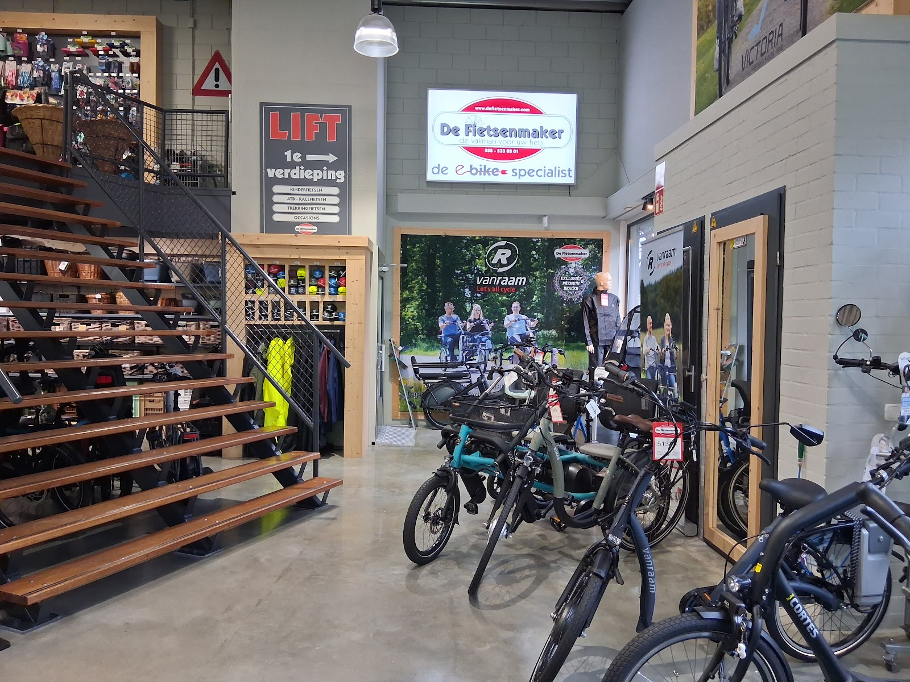

winkel

Kom proefrijden
Stadsfietsen, elektrische fietsen, transportfietsen, kinderfietsen en elektrische driewielers. Wij zoeken samen met u de fiets die bij u past, uit de aanbieding of uit de nieuwe collectie. Uw huidige fiets kunt u meestal inruilen.